By Morgan Aldridge on 2026-11-05
These colors were determined by inspecting the "Colors" control panel under Macintosh System 7 with ResEdit. The menus contain the color names and the `rgb ` resources contain the color hex codes.
Note: If the colors appear a little dark, it's because Macintosh computers and their System Software was originally intended to use a gamma of 1.8.
| Label | Color | RGB |
|---|---|---|
| Purple | #CCCCFF | |
| Yellow | #FFFF00 | |
| Green | #99FF00 | |
| Turquoise | #33FFFF | |
| Red | #EE0000 | |
| Pink | #FF99FF | |
| Blue | #99CCFF | |
| Gray | #BBBBBB | |
| Black & White | #000000 |
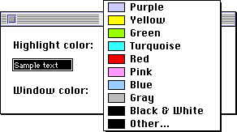
| Color | RGB | |||
|---|---|---|---|---|
| Label | Highlight | Shadow | Highlight | Shadow |
| Standard | #CCCCFF | #333366 | ||
| Gold | #FFCC99 | #996600 | ||
| Green | #99CC99 | #003300 | ||
| Turquoise | #99FFFF | #003333 | ||
| Red | #FFCCCC | #990000 | ||
| Pink | #FFCCFF | #990066 | ||
| Blue | #99CCFF | #003366 | ||
| Gray | #DDDDDD | #333333 | ||
| Black & White | #000000 | #000000 | ||
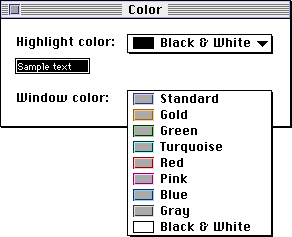
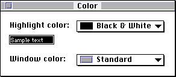
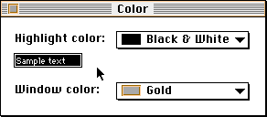
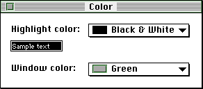
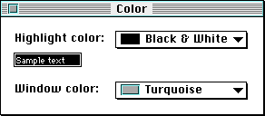
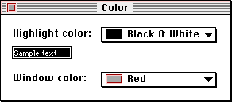
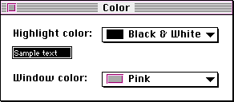
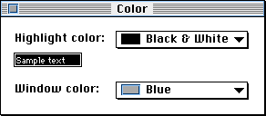
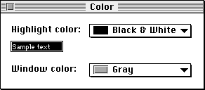
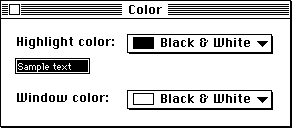